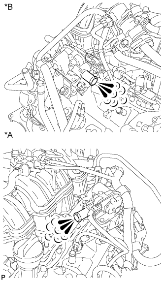
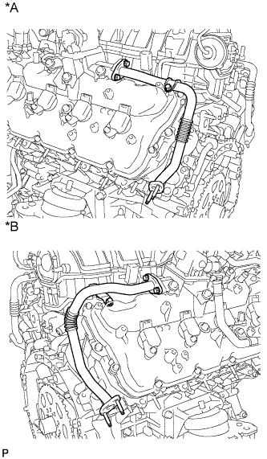
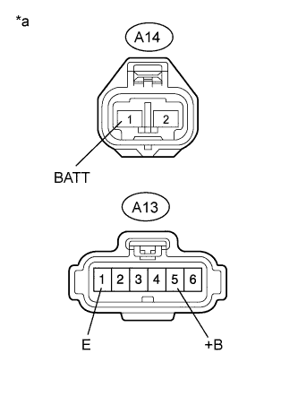
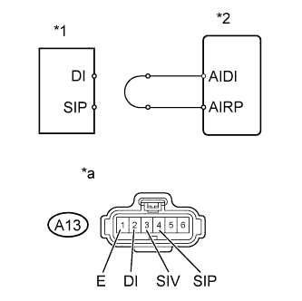

DTC P2440 Secondary Air Injection System Switching Valve Stuck Open Bank1 |
DTC P2442 Secondary Air Injection System Switching Valve Stuck Open Bank 2 |
| DTC No. | DTC Detection Condition | Trouble Area |
| P2440 | The air switching valve (for Bank 1) is stuck open for approximately 60 seconds after the engine is started cold (1 trip detection logic). |
|
| The air switching valve (for Bank 1) is stuck open for 5 seconds or more while the engine is running (1 trip detection logic). | ||
| P2442 | The air switching valve (for Bank 2) is stuck open for approximately 60 seconds after the engine is started cold (1 trip detection logic). |
|
| The air switching valve (for Bank 2) is stuck open for 5 seconds or more while the engine is running (1 trip detection logic). |
| Required Sensors/Components | Pressure sensor |
| Frequency of Operation | Once per drive cycle |
| One of the following conditions is met | (a), (b) or (c) |
| (a) Condition 2 (secondary air injection ON) and Condition 2 (secondary air injection OFF) | Met |
| (b) Condition 1 (secondary air injection ON), Condition 1 (secondary air injection OFF), no pressure change detected when secondary air injection ON and pressure pulsation detected when secondary air injection OFF | Met |
| (c) Condition 1 (secondary air injection ON), Condition 2 (secondary air injection OFF), no pressure change detected when secondary air injection ON and pressure pulsation detected when secondary air injection OFF | Met |
| One of the following conditions is met | (a), (b) or (c) |
| (a) Condition 2 (secondary air injection ON) and Condition 2 (secondary air injection OFF) | Met |
| (b) Condition 1 (secondary air injection ON) and Condition 1 (secondary air injection OFF) | Met |
| (c) Condition 1 (secondary air injection ON) and Condition 2 (secondary air injection OFF) | Met |
| Cumulative pressure pulsation | 100 kPa or higher |
| Both conditions are met during secondary air injection ON | - |
| Cumulative pressure pulsation | 12 kPa or higher |
| Secondary air injection pressure | 1 kPa or higher |
| Both conditions are met during secondary air injection ON | - |
| Cumulative pressure pulsation | 12 kPa or higher |
| Secondary air injection pressure | Below 1 kPa |
| Both conditions are met during secondary air injection OFF | - |
| Cumulative pressure pulsation | 20 kPa or higher |
| Secondary air injection pressure | 2.5 kPa or higher |
| Both conditions are met during secondary air injection OFF | - |
| Cumulative pressure pulsation | 20 kPa or higher |
| Secondary air injection pressure | Below 2.5 kPa |
| Tester Display | Description |
| NORMAL |
|
| ABNORMAL |
|
| INCOMPLETE |
|
| UNKNOWN |
|
| 1.CHECK FOR ANY OTHER DTCS OUTPUT (IN ADDITION TO SECONDARY AIR INJECTION SYSTEM DTCS) |
Connect the intelligent tester to the DLC3.
Turn the engine switch on (IG).
Turn the tester on.
Enter the following menus: Powertrain / Engine and ECT / DTC.
Read DTCs and freeze frame data.
| Result | Proceed to |
| P2440 and/or P2442 | A |
| P2440 and P0412 | B |
| P2442 and P0416 and/or P0417 | C |
| P2440, P2442 and other DTCs (except P0412, P0416 and P0417) are output | D |
|
| ||||
|
| ||||
|
| ||||
| A | |
| 2.PERFORM ACTIVE TEST USING INTELLIGENT TESTER (SECONDARY AIR INJECTION SYSTEM OPERATION) |
|  |
Perform a visual check:
Start the engine and warm it up.
Turn the engine switch off.
Disconnect the No. 1 and No. 2 air injection system hoses.
Connect the intelligent tester to the DLC3.
Turn the engine switch on (IG).
Turn the tester on.
Enter the following menus: Powertrain / Engine and ECT / Utility / Air Injection Check / Manual Mode / AIR PUMP: ON, ASV1: OPEN, ASV2: OPEN.
Start the engine.
Perform the secondary air injection system forced operation while the engine is idling.
Place your hand near the air switching valve port and check that the exhaust gas pressure pulsates when the air switching valve is turned on.
Enter the following menus: Powertrain / Engine and ECT / Utility / Air Injection Check / Manual Mode / AIR PUMP: ON, ASV1: OPEN, ASV2: OPEN and AIR PUMP: ON, ASV1: CLOSE, ASV2: CLOSE.
Check that the exhaust gas does not pulsate when the ASV is turned off.
Turn the engine switch off.
| Air Pump Operation | Air Switching Valve Operation | Exhaust Gas Pulsation |
| ON | OFF | Not detected |
| ON | ON | Detected |
| *A | Bank 1 |
| *B | Bank 2 |
|
| ||||
| OK | |
| 3.INSPECT AIR SWITCHING VALVE ASSEMBLY (PRESSURE SENSOR) |
Connect the intelligent tester to the DLC3.
Turn the engine switch on (IG).
Turn the tester on.
Enter the following menus: Powertrain / Engine and ECT / Data List / Air pump pressure (Absolute) and Air Pump2 Pressure (Absolute).
Check the pressure displayed on the tester.
| Result | Proceed to |
| OK | A |
| NG (for Bank 1) | B |
| NG (for Bank 2) | C |
|
| ||||
|
| ||||
| A | ||
| ||
| 4.INSPECT AIR TUBE (BLOCKAGE AND LEAK) |
|  |
Check that the No. 3 and No. 4 air tubes are securely connected to both the exhaust manifold and the air switching valve.
Inspect the air tube for blockages and damage.
| *A | Bank 1 |
| *B | Bank 2 |
|
| ||||
| OK | |
| 5.INSPECT AIR SWITCHING VALVE ASSEMBLY |
Inspect the air switching valve assembly for bank 1 (Click here).
Inspect the air switching valve assembly for bank 2 (Click here).
| Result | Proceed to |
| OK | A |
| NG (for Bank 1) | B |
| NG (for Bank 2) | C |
|
| ||||
|
| ||||
| A | |
| 6.INSPECT AIR INJECTION VSV RELAY (AI-VSV) |
Inspect the air injection VSV relay (AI-VSV) (Click here).
|
| ||||
| OK | |
| 7.CHECK AIR INJECTION VSV RELAY (AI-VSV) (POWER SOURCE) |
 |
Remove the air injection VSV relay (AI-VSV).
Measure the voltage according to the value(s) in the table below.
| Tester Connection | Condition | Specified Condition |
| Air injection VSV relay (AI-VSV) terminal 2 - Body ground | Always | 11 to 14 V |
| *1 | Engine Room Relay Block |
| *2 | Air Injection VSV Relay (AI-VSV) |
Reinstall the air injection VSV relay (AI-VSV).
|
| ||||
| OK | |
| 8.CHECK HARNESS AND CONNECTOR (AIR INJECTION VSV RELAY (AI-VSV) - ECM) |
Remove the air injection VSV relay (AI-VSV).
Disconnect the ECM connector.
Measure the resistance according to the value(s) in the table below.
| Tester Connection | Condition | Specified Condition |
| Air injection VSV relay (AI-VSV) terminal 1 - C30-20 (AIR1) | Always | Below 1 Ω |
| Tester Connection | Condition | Specified Condition |
| Air injection VSV relay (AI-VSV) terminal 1 or C30-20 (AIR1) - Body ground | Always | 10 kΩ or higher |
Reinstall the air injection VSV relay (AI-VSV).
Reconnect the ECM connector.
|
| ||||
| OK | |
| 9.INSPECT AIR INJECTION CONTROL DRIVER (POWER SOURCE OF AIR INJECTION CONTROL DRIVER) |
|  |
Disconnect the air injection control driver connectors.
Turn the engine switch on (IG).
Measure the voltage according to the value(s) in the table below.
| Tester Connection | Condition | Specified Condition |
| A14-1 (BATT) - Body ground | Always | 11 to 14 V (near battery voltage) |
| A13-5 (+B) - Body ground | Engine switch on (IG) | 11 to 14 V (near battery voltage) |
Measure the resistance according to the value(s) in the table below.
| Tester Connection | Condition | Specified Condition |
| A13-1 (E) - Body ground | Always | Below 1 Ω |
| *a | Front view of wire harness connector (to Air Injection Control Driver) |
|
| ||||
| OK | |
| 10.CHECK HARNESS AND CONNECTOR (ECM - AIR INJECTION CONTROL DRIVER) |
Disconnect the ECM connectors.
Disconnect the air injection control driver connectors.
Measure the resistance according to the value(s) in the table below.
| Tester Connection | Condition | Specified Condition |
| C28-26 (AIRV) - A13-3 (SIV) | Always | Below 1 Ω |
|
| ||||
| OK | |
| 11.PERFORM ACTIVE TEST USING INTELLIGENT TESTER |
  |
Disconnect the air injection control driver connector.
Connect terminals DI and SIV of the wire harness connector for the air injection control driver.
| *1 | Air Injection Control Driver |
| *2 | ECM |
| *a | Front view of wire harness connector (to Air Injection Control Driver) |
Connect the intelligent tester to the DLC3.
Turn the engine switch on (IG) and turn the tester on.
Enter the following menus: Powertrain / Engine and ECT / Utility / Air Injection Check / Manual Mode / AIR PUMP: ON, ASV 1: OPEN, ASV 2: OPEN.
Start the engine.
Perform the secondary air injection system forced operation while the engine is idling.
Measure the voltage between the SIV and E terminals of the ECM connector when the secondary air injection system is ON and OFF.
Turn the engine switch off.
| Tester Connection | Condition | Specified Condition |
| A13-3 (SIV) - A13-1 (E) | AIR PUMP: ON, ASV: OPEN | 0.5 to 2 V |
| A13-3 (SIV) - A13-1 (E) | AIR PUMP: OFF, ASV: CLOSE | 11 to 14 V |
Connect terminals DI and SIP of the wire harness connector for the air injection control driver.
| *1 | Air Injection Control Driver |
| *2 | ECM |
| *a | Front view of wire harness connector (to Air Injection Control Driver) |
Connect the intelligent tester to the DLC3.
Turn the engine switch on (IG) and turn the tester on.
Enter the following menus: Powertrain / Engine and ECT / Utility / Air Injection Check / Manual Mode / AIR PUMP: ON, ASV 1: OPEN, ASV 2: OPEN.
Start the engine.
Perform the secondary air injection system forced operation while the engine is idling.
Measure the voltage between the SIP and E terminals of the ECM connector when the secondary air injection system is ON and OFF.
Turn the engine switch off.
| Tester Connection | Condition | Specified Condition |
| A13-4 (SIP) - A13-1 (E) | AIR PUMP: ON, ASV: OPEN | 0.5 to 2 V |
| A13-4 (SIP) - A13-1 (E) | AIR PUMP: OFF, ASV: CLOSE | 11 to 14 V |
Reconnect the air injection control driver connector.
|
| ||||
| OK | |
| 12.REPLACE AIR INJECTION CONTROL DRIVER |
Replace the air injection control driver (Click here).
| NEXT | |
| 13.CHECK WHETHER DTC OUTPUT RECURS (DTC P2440 AND/OR P2442) |
Start the engine and warm it up.
Turn the engine switch off.
Connect the intelligent tester to the DLC3.
Turn the engine switch on (IG).
Turn the tester on.
Clear DTCs (if stored) (Click here).
Enter the following menus: Powertrain / Engine and ECT / Utility / Air Injection Check / Automatic Mode.
Start the engine after the intelligent tester initialization is finished.
Perform the System Check operation by pressing ENTER (Next).
Perform the following to confirm the secondary air injection system pending codes: Press the Exit button.
Check pending DTCs.
Turn the engine switch off.
|
| ||||
| OK | ||
| ||